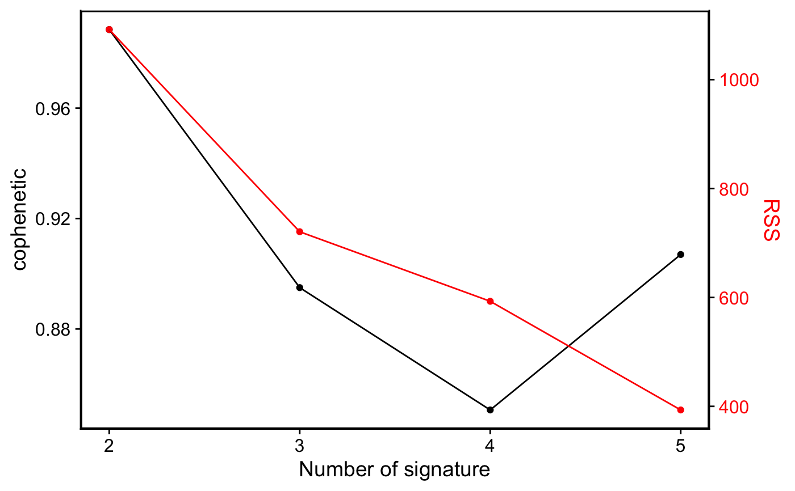
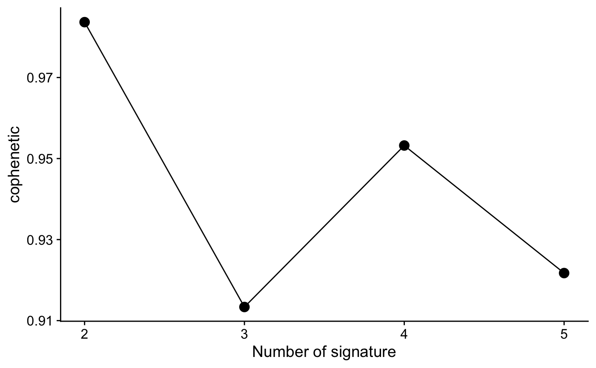
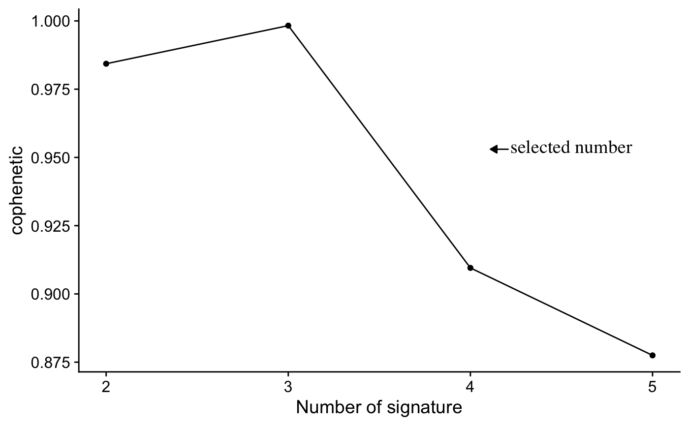
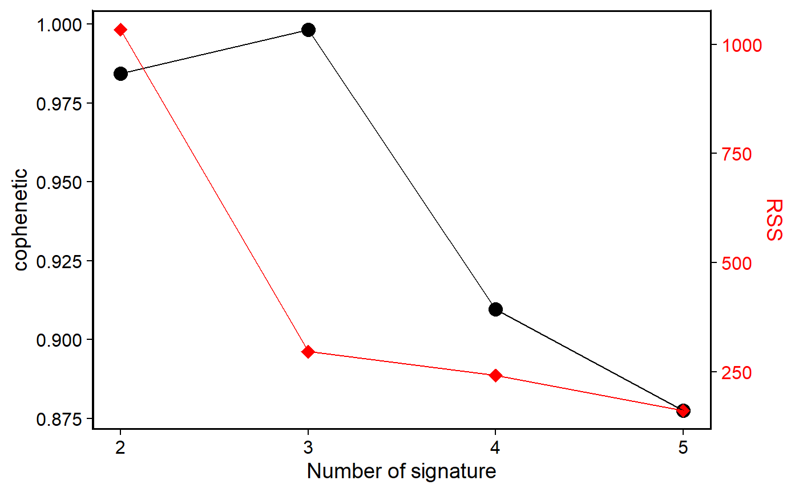
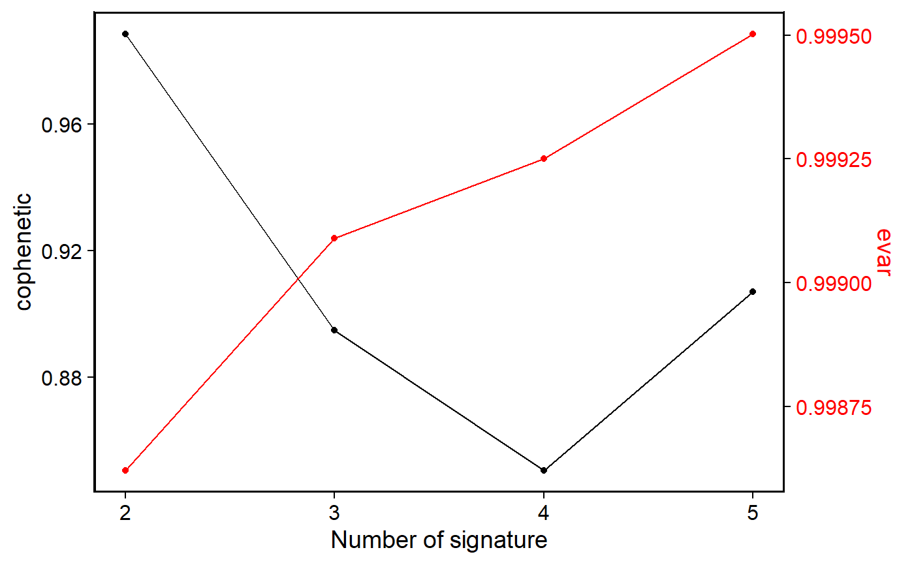
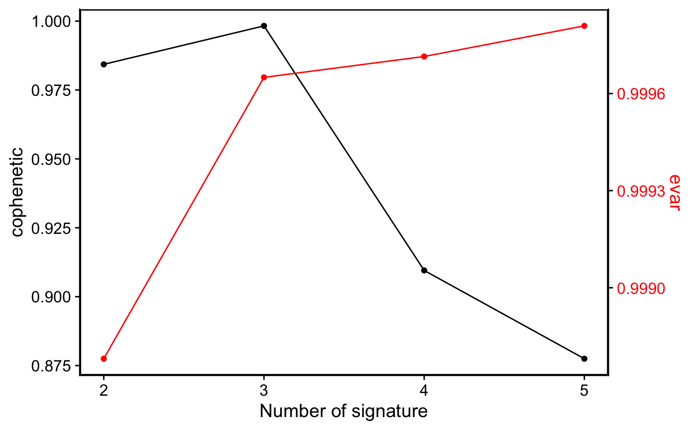

R/show_sig_number_survey.R
show_sig_number_survey.Rdsig_estimate shows comprehensive rank survey generated by NMF package, sometimes it is hard to consider all measures. Here provides a one or two y-axis visualization method to help users determine the optimal signature number (showing both stability ("cophenetic") and error (RSS) at default). Users can also set custom measures to show.
show_sig_number_survey( object, x = "rank", left_y = "cophenetic", right_y = "rss", left_name = left_y, right_name = toupper(right_y), left_color = "black", right_color = "red" )
| object | a |
|---|---|
| x | column name for x axis. |
| left_y | column name for left y axis. |
| right_y | column name for right y axis. |
| left_name | label name for left y axis. |
| right_name | label name for right y axis. |
| left_color | color for left axis. |
| right_color | color for right axis. |
a ggplot object
sig_estimate for estimating signature number for sig_extract, show_sig_number_survey2 for more visualization method.
# \donttest{ load(system.file("extdata", "toy_copynumber_tally_M.RData", package = "sigminer", mustWork = TRUE )) library(NMF) cn_estimate <- sig_estimate(cn_tally_M$nmf_matrix, cores = 1, nrun = 5, verbose = TRUE )#> Compute NMF rank= 2 ... + measures ... OK #> Compute NMF rank= 3 ... + measures ... OK #> Compute NMF rank= 4 ... + measures ... OK #> Compute NMF rank= 5 ... + measures ... OK#>#> method seed rng metric rank sparseness.basis sparseness.coef rss #> 2 brunet random 2 KL 2 0.7931424 0.3520048 1077.4280 #> 3 brunet random 3 KL 3 0.7413722 0.4008569 274.2391 #> 4 brunet random 1 KL 4 0.7513321 0.4519870 203.3494 #> 5 brunet random 4 KL 5 0.7915950 0.4413905 120.2693 #> evar silhouette.coef silhouette.basis residuals niter cpu cpu.all nrun #> 2 0.9987288 1.0000000 1.0000000 34.443128 520 0.043 3.822 5 #> 3 0.9996764 0.7608363 0.7624204 16.869207 800 0.058 4.060 5 #> 4 0.9997601 0.5192666 0.5091383 10.022368 620 0.080 8.943 5 #> 5 0.9998581 0.3421886 0.4701766 6.200343 790 0.067 14.079 5 #> cophenetic dispersion silhouette.consensus #> 2 0.9836628 0.8272 0.8933333 #> 3 0.9133654 0.5264 0.6458333 #> 4 0.9532174 0.5776 0.4983537 #> 5 0.9217369 0.5264 0.4949451# Show two measures show_sig_number_survey(cn_estimate)# Show one measure p <- show_sig_number_survey(cn_estimate, right_y = NULL) p# Show data from a data.frame show_sig_number_survey(cn_estimate$survey)#> method seed rng metric rank sparseness.basis sparseness.coef rss #> 2 brunet random 2 KL 2 0.7931424 0.3520048 1077.4280 #> 3 brunet random 3 KL 3 0.7413722 0.4008569 274.2391 #> 4 brunet random 1 KL 4 0.7513321 0.4519870 203.3494 #> 5 brunet random 4 KL 5 0.7915950 0.4413905 120.2693 #> evar silhouette.coef silhouette.basis residuals niter cpu cpu.all nrun #> 2 0.9987288 1.0000000 1.0000000 34.443128 520 0.043 3.822 5 #> 3 0.9996764 0.7608363 0.7624204 16.869207 800 0.058 4.060 5 #> 4 0.9997601 0.5192666 0.5091383 10.022368 620 0.080 8.943 5 #> 5 0.9998581 0.3421886 0.4701766 6.200343 790 0.067 14.079 5 #> cophenetic dispersion silhouette.consensus #> 2 0.9836628 0.8272 0.8933333 #> 3 0.9133654 0.5264 0.6458333 #> 4 0.9532174 0.5776 0.4983537 #> 5 0.9217369 0.5264 0.4949451show_sig_number_survey(cn_estimate$survey, right_y = "dispersion", right_name = "dispersion" )show_sig_number_survey(cn_estimate$survey, right_y = "evar", right_name = "evar" )# }